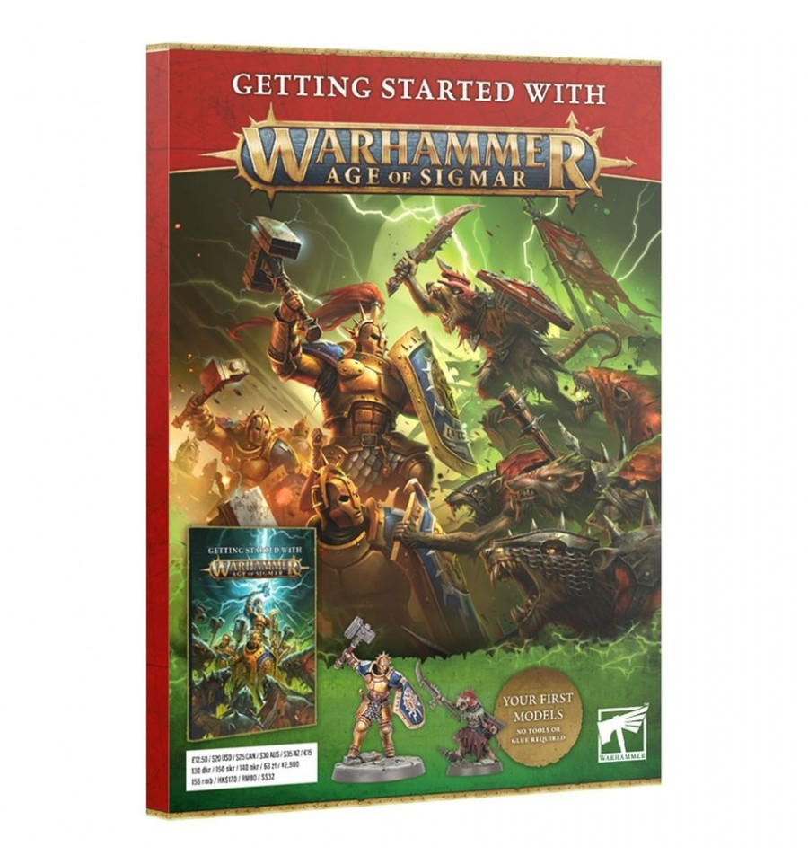
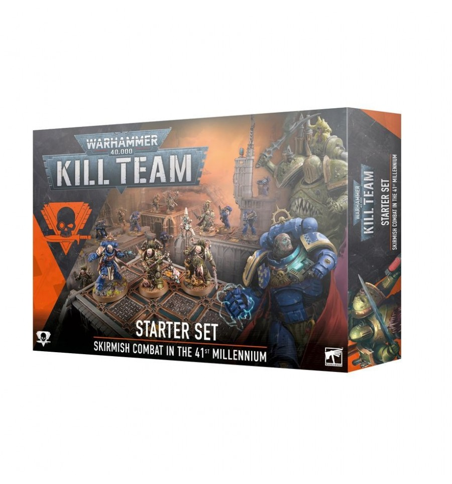
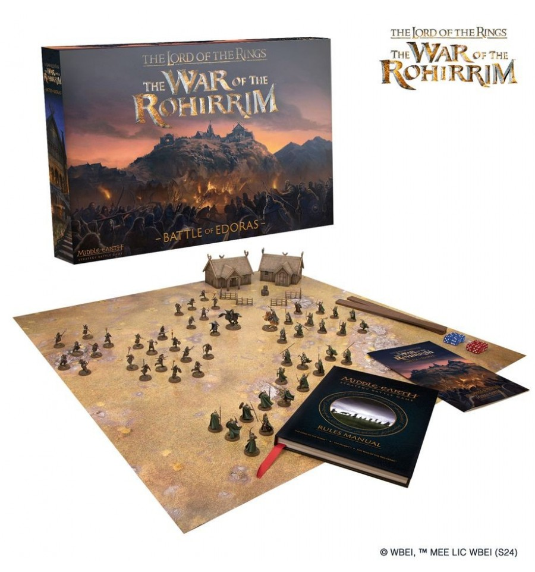

Comienza aqui con Warhammer Age of Sigmar (ESP) Citadel
Warhammer Age of Sigmar es un juego de guerra estratégico de mesa lleno de acción. No importa con cuál de las muchas facciones únicas de guerreros, monstruos y extrañas criaturas elijas jugar, tendrás la oportunidad de hacerte con tu porción de los casi infinitos Reinos Mortales. En medio del caos y las batallas, coleccionarás, construirás y pintarás tu ejército en constante crecimiento, ¡y luego jugarás partidas de infarto contra otros fanáticos de Warhammer Age of Sigmar para ver quién emerge victorioso! Esta revista te brindará la información que necesitas para sumergirte en los extraños y hermosos Reinos Mortales. ¡Tu aventura comienza aquí! experimentados.
$18.990

Kill Team Starter Set (Español) Citadel
Este set de inicio incluye todo lo que necesitan dos jugadores para dar sus primeros pasos en Kill Team. Contiene dos equipos de exterminio completos: los Marines Espaciales sobrehumanos de los Ángeles de la Muerte y sus homólogos corruptos, los inmundos Marines de la Plaga de la Guardia de la Muerte. Además, con todas las demás herramientas y accesorios que necesitas, y una serie de escenarios introductorios, puedes familiarizarte con los conceptos básicos de las batallas tácticas a la velocidad del rayo.
$106.990

Lord of the Rings War Of The Rohirrim Battle Of Edoras Citadel
La Guerra de los Rohirrim – Batalla de Edoras es la forma ideal de comenzar o continuar tus aventuras en la Tierra Media. Toma el mando de los poderosos guerreros de Rohan o de los amargados y agresivos miembros de la tribu de las colinas, ambos liderados por héroes llenos de carácter, y recrea tus escenas favoritas de El Señor de los Anillos: La Guerra de los Rohirrim ™. Esta caja contiene 56 miniaturas divididas en dos ejércitos equilibrados (uno del Bien y otro del Mal) y todo lo que necesitas para jugar, incluido un manual de reglas, dados y accesorios.
$212.990